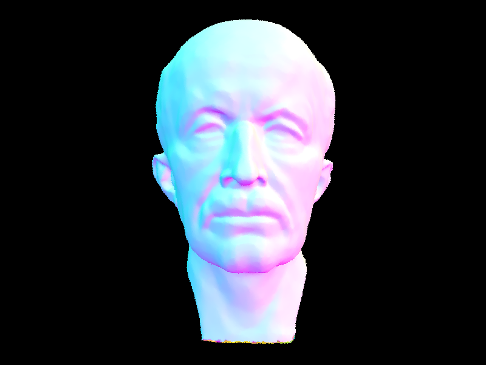
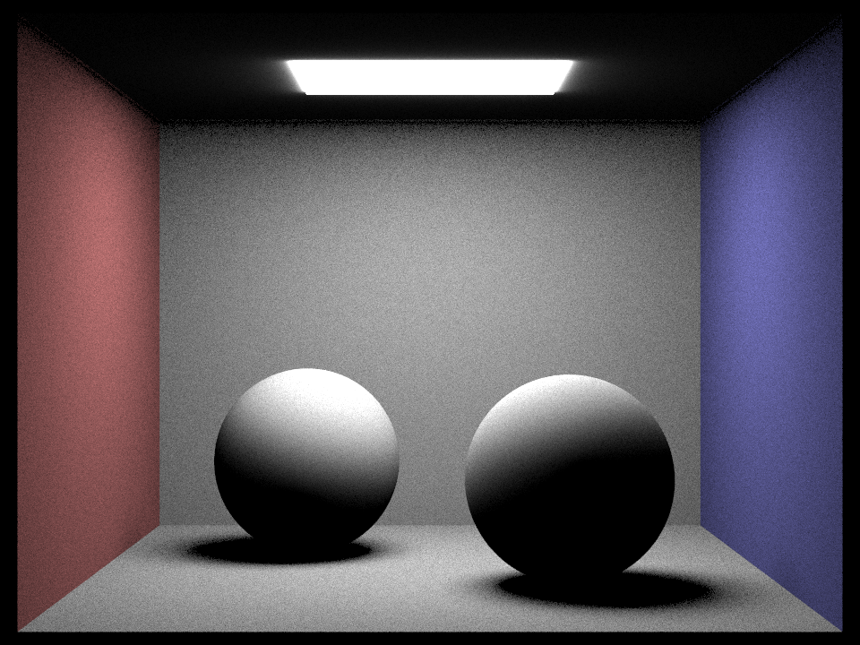
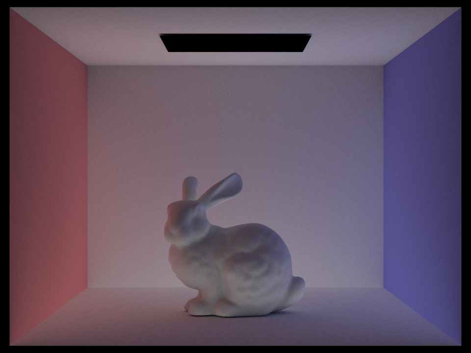

Overview
In this project, I implemented a basic ray tracer, allowing one to render scenes with realistic lighting and shadows. This project was divided into five parts. First I wrote code to generate rays and test for intersection with triangles and spheres. Next, in part 2, I created my own custom implementation of a bounding volume hierarchy in order to accelerate the ray tracing. In part 3, I simulated direct illumination of diffuse surfaces using both unform sampling and importance sampling. Then, in part 4 I extended this to simulate global illumination as well by recursively tracing rays to create a path. Lastly, in part 5 I implemented adaptive sampling to reduce the noise in the images rendered.
Part 1: Ray Generation and Scene Intersection (20 Points)
Walk through the ray generation and primitive intersection parts of the rendering pipeline.
To generate rays, we first have to map the (x, y) image coordinates to camera sensor space coordinates (which lie on the Z = -1 plane). The transformation is as follows:
x' = x * 2 * tan(0.5 * hFov * PI / 180) - tan(0.5 * hFov * PI / 180)
y' = y * 2 * tan(0.5 * vFov * PI / 180) - tan(0.5 * vFov * PI / 180)
z' = -1Next, we transform these new coordinates from camera space to world space by multiplying by the matrix
c2w.
The resulting vector is the direction of the ray we are generating, and the origin is camera's position. We also
make sure to bound the ray's possible t-interval with the near and far clipping planes.
Primitive intersection is split up into two primary tasks: ray-triangle intersection and ray-sphere intersection. To accomplish these tasks, we essentially have to solve for the t-value where the ray's equation equals the primitive's equation. Then we just need to ensure this t-value is within the acceptable range.
Explain the triangle intersection algorithm you implemented in your own words.
To test for ray-triangle intersection, I followed the guide at this link
Essentially, first we use the cross product to find the triangle's normal vector. Then we solve for the intersection time t by solving the following equation:t = ((p' - o)•N) / (d•N)where p' is a point on the triangle, o is the ray's origin, and d is the ray's direction. If this t value is outside the acceptable range, we return false. Otherwise, we easily find the actual point of intersection by plugging it into the ray's equation. Lastly, we use the dot product to quickly check if the intersection point lies inside each edge of the triangle, and if it does we return true. In
Triangle::intersect(), we find the
surface normal at the intersection point by calculating barycentric coordinates (based off of the ratios of the areas of the
subtriangles) and then using them to weight the 3 vertex normals.
Show images with normal shading for a few small .dae files.
|
|

|

|
|
Part 2: Bounding Volume Hierarchy (20 Points)
Walk through your BVH construction algorithm. Explain the heuristic you chose for picking the splitting point.
To construct my BVH, I first loop through all the primitives to create one big BVH node with a large bounding box.
While looping, I also calculate the average and range of the primitive centroids along each axis. If there are less than
or equal to max_leaf_size primitives, I make the BVH node a leaf node with all the primitives and return. Otherwise,
I determine the longest axis using the centroid ranges previously calculated and this longest axis becomes the axis I split the current BVH node on.
I divide all the primitives into two groups across this split axis based on their centroids and then recursively
construct a left and a right BVH using these two groups.
Show images with normal shading for a few large .dae files that you can only render with BVH acceleration.
|
|
|
|
|

|
Compare rendering times on a few scenes with moderately complex geometries with and without BVH acceleration. Present your results in a one-paragraph analysis.
I will consider 3 scenes in increasing complexity: teapot.dae, cow.dae, and maxplanck.dae.
When rendering teapot.dae without the improved BVH implementation, it took 3.9876 seconds, compared to 0.0004 seconds with
it. This is approximately a 10,000x improvement! When rendering cow.dae without the improved BVH implementation,
it took 12.5041 seconds, compared to 0.0444 seconds without it. This is an improvement of about 281x. When rendering maxplanck.dae
without the improved BVH implementation, it took it took 175.8759 seconds, compared to 0.0553 seconds with it. This is 3180x improvement.
Clearly, my BVH implementation is extremely effective at reducing rendering times, although it is interesting that there is proprtionally less of a speedup
in the second scene than in the third, even though the third is of greater complexity.
Part 3: Direct Illumination (20 Points)
Walk through both implementations of the direct lighting function.
The first implementation uses uniform hemisphere sampling. For each sample vector generated from hemisphereSampler,
I transform it to world space and create a new ray from the intersection point in the direction of the sampled vector.
If this ray intersects the BVH, I add the portion of light from this ray to a running total vector that I then
divide by the number of samples and return. Essentially, I am using Monte Carlo estimation to estimate the
value of the reflection equation.
The second implementation uses importance sampling. This function iterates over all light sources, and for each light takes sample vectors from the intersection point towards it (we only need one sample for a point light source). Using a ray with origin at the intersection point and direction being the sampled vector, I check for no intersections (clipping the valid t-range to just before the light source), as this means there is a direct unobstructed path from the intersection point to the light source. If there is no intersection, I add the portion of light from this ray to a running total vector that I once again then divide by the number of samples for each light source and return.
Show some images rendered with both implementations of the direct lighting function.
| Uniform Hemisphere Sampling | Light Sampling |
|---|---|
|

|

|
|
|
|
Focus on one particular scene with at least one area light and compare the noise levels in soft shadows when rendering with 1, 4, 16, and 64 light rays (the -l flag) and with 1 sample per pixel (the -s flag) using light sampling, not uniform hemisphere sampling.
|
|
|
|
|

|
As can clearly be seen in the above images, the soft shadow noise is greatly reduced when using more light rays. This intuitively makes sense because with more samples for each area light, we get a better estimate of the true light that reaches each part of the scene.
Compare the results between uniform hemisphere sampling and lighting sampling in a one-paragraph analysis.
While both methods of sampling are effective, importance/lighting sampling is clearly better for reducing noise. This is expected because with uniform hemisphere sampling, many of the ray samples being generated don't actually intresect with a light source, and thus don't add any information about the lighting in the scene. With lighting sampling, we are guaranteed that each sample will intersect with a light source (unless some other object in the scene blocks it). In addition, lighting sampling seems to render the scene faster, rendering CBbunny.dae in 155 seconds compared to 230 seconds for hemisphere sampling (with all other settings the same).
Part 4: Global Illumination (20 Points)
Walk through your implementation of the indirect lighting function.
For zero-bounce radiance, I simply return the emission from the BSDF. For one-bounce radiance,
I return either the hemisphere sampling or lighting sampling estimate, depending on the
parameter passed in. In PathTracer::at_least_one_bounce_radiance(), I check the depth of the ray
passed in (rays are initialized with depth = max_ray_depth). If the depth is 0, I return a zero vector (no light). If the depth is 1, I return the result from
PathTracer::one_bounce_radiance(). Else, I call DiffuseBSDF::sample_f() to get a sample vector and a value
for the BSDF at that point. I create a new ray (with depth decremented by 1) with origin at the intersection point and
direction equal to the sample vector (transformed to world space). I then generate a random number between 0 and 1, and if it is less than
my chosen cpdf value (currently 0.35), or if it is the very first bounce, then I proceed to check for a ray intersection with the BVH.
If such an intersection exists, I use the Monte Carlo estimate for the reflection equation, but include a recursive call to
evaluate the lighting at that new intersection point. Finally, I return the resulting estimate.
Show some images rendered with global (direct and indirect) illumination. Use 1024 samples per pixel.
|
|
|
Pick one scene and compare rendered views first with only direct illumination, then only indirect illumination. Use 1024 samples per pixel. (You will have to edit PathTracer::at_least_one_bounce_radiance(...) in your code to generate these views.)
|
|

|
In the direct illumination image, as expected we see the light coming directly from the light source overhead, as well as all the light reflected immediately off of surfaces with a single bounce. In the indirect illumination image, we can see all the light that is reflected off of surfaces more than once, which is why the light source appears black and in general the lighting in the scene is dimmer since it is being reflected multiple times and the rays lose radiance with each bounce.
For CBbunny.dae, compare rendered views with max_ray_depth set to 0, 1, 2, 3, and 100 (the -m flag). Use 1024 samples per pixel.
|
|
|

|
|
|
|
In the depth 0 image, as expected we can only see the light directly coming from the light source, and all is black. In the depth 1 image, we now can also see the light immediatly reflected off of surfaces (the bunny and the walls), but since we can only see up to 1-bounce paths, the ceiling and underside of the bunny remain black. In the depth 2 image, essentially the entire scene is now lit, as we can see up to 2-bounce paths. Depth 3 adds slightly more light to the underside of the bunny, as additional light can now reach there with ever more complicated paths. Finally, in the depth 100 image, light pervades the entire scene and the shadows are very soft due to the layering of countless complex and multi-bounce paths.
Pick one scene and compare rendered views with various sample-per-pixel rates, including at least 1, 2, 4, 8, 16, 64, and 1024. Use 4 light rays.
|
|
|
|
|
|
|
|
|
|
|
Clearly, increasing the numer of samples per pixel leads to a reduction in noise. In my opinion, the greatest improvement is seen in the jump from 64 spp to 1024 spp, which I suppose makes sense since this is the greatest propotional increase in spp.
Part 5: Adaptive Sampling (20 Points)
Explain adaptive sampling. Walk through your implementation of the adaptive sampling.
Adaptive sampling is a method of rendering images with reduced noise without having to uniformly
increase the number of samples per pixel across all pixels. Instead, we use a heuristic based off of a
statistical confidence interval to determine if a pixel has converged yet. If it is determined to have converged,
we no longer sample rays for that pixel. To keep rendering times low, we only test for convergence once
every samplesPerBatch samples.
Pick two scenes and render them with at least 2048 samples per pixel. Show a good sampling rate image with clearly visible differences in sampling rate over various regions and pixels. Include both your sample rate image, which shows your how your adaptive sampling changes depending on which part of the image you are rendering, and your noise-free rendered result. Use 1 sample per light and at least 5 for max ray depth.
|
|
|
|
|
|